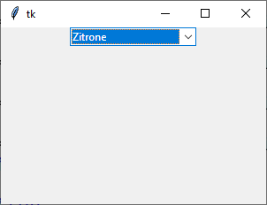

ttk.Combobox
Textfeld mit einer Drop-Down-Liste
ttk.Combobox erzeugen
cb = ttk.Combobox(parent, Optionen)
| Optionsname | Beschreibung |
|---|---|
| exportselection | tk.YES: Ausgewählter Text kann per
STRG-C ins Clipboard exportiert werden (default) |
| justify | Ausrichtung des Textes: tk.LEFT,
tk.CENTER oder tk.RIGHT |
| height | Höhe der Listbox in Zeilen |
| postcommand | Funktion, die vor der Anzeige der Listbox aufgerufen wird |
| state | 'readonly': Werte sind im Entry nicht editierbar,
'normal': Werte sind editierbar (default) oder
'disabled': Combobox wird grau hinterlegt, keine Interaktion möglich |
| textvariable | Variable, die den Inhalt der Auswahl festhält |
| values | Tupel von möglichen Werten |
| width | Breite der Combobox in mittlerer Zeichenbreite |
ttk.Combobox kennt die Standardoptionen: class_, cursor, placeholder, style und takefocus
Das folgende Programm stellt eine Combobox dar und reagiert auf die Auswahl:
import tkinter as tk
from tkinter import ttk
class A(tk.Tk):
def __init__(self):
super().__init__()
self.geometry("300x200")
self._createWidgets()
def _createWidgets(self):
self.svar = tk.StringVar()
fruits = ('Banane', 'Pfirsich', 'Zitrone')
self.svar = tk.StringVar(value=fruits[0])
cBox = ttk.Combobox(self,
textvariable=self.svar,
values=fruits,
postcommand=self._onPost,
state='readonly')
cBox.pack()
cBox.bind('<<ComboboxSelected>>', self._onSelectCombo )
def _onPost(self):
print('Listbox offen...')
def _onSelectCombo(self, event):
print(self.svar.get())
if __name__ == '__main__':
window = A()
window.mainloop()Methoden
Combobox kennt folgende Methoden:
| Methode | Beschreibung |
|---|---|
| cb.current(index) | Die Combobox markiert den Wert aus values,
die dem index entspricht |
| cb.current() | Es wird ein Index von values ausgegeben,
oder -1 |
| cb.get() | Aktueller Wertwird zurückgeliefert |
| cb.set(value) | Setzt den Wert der Combobox auf value.
Dieser braucht nicht in values vorzukommen. |
Es werden die folgenden allgemeinen Widgetmethoden unterstützt:
- Konfigurationsmethoden:
cget(…)undconfigure(…) - Sonstige Methoden:
identify(…),instate(…)undstate(…)
Combobox kennt darüberhinaus die Entry-Methoden.
Virtuelle Ereignisse
Combobox kennt das virtuelle Ereignis '<<ComboboxSelected>>' -- ein Element wird ausgewählt.